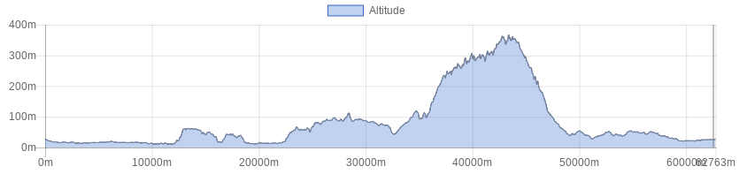

<!doctype html>
<html class="no-js" lang="en" dir="ltr">
  <head>
    <meta charset="utf-8">
    <meta http-equiv="x-ua-compatible" content="ie=edge">
    <meta name="viewport" content="width=device-width, initial-scale=1.0">
    <title>Foundation for Sites</title>
    <link rel="stylesheet" href="css/foundation.css">
    <link rel="stylesheet" href="css/app.css">
  </head>
  <style type="text/css">
  
  
h1.blu {
background-color: #2f5a55;
color: white;
font-size: 1.75rem; 
}

h1.verde {
background-color: #008e80;
color: white;
font-size: 1rem; 
}


h1.bianco {
background-color: white;
color: #506487;
font-size: 1rem; 
}

button.radius, .button.radius {
    border-radius: 3px; font-size:12px;
    }
  button.round, .button.round {
    border-radius: 1000px; font-size:1.2em; background-color:#3fa537}

</style>
  <body>
    <div class="grid-container">
      <div class="grid-x grid-padding-x">
        <div class="large-12 cell">
          <h1 class="verde">&nbsp;</h1>
        </div>
      </div>
      
       <div class="grid-x grid-padding-x">
        <div class="large-12 cell">
        <table>
        <tr>
        <td></td>
        <td><b>Svizzera Pesciatina</b></td>
        </tr>
        </table>
        
        </div>
      </div>
      
      <div class="grid-x grid-padding-x">
        <div class="large-12 cell">
          <h1 class="verde">&nbsp;</h1>
        </div>	
      </div>
      
      <!------ inizio tabella --->
       <div class="grid-x grid-padding-x">
        <div class="large-12 cell">
        <table>
        
         <tr>
        <td><b>Difficulty level</B></td>
        <td></td>
        </tr>
        
        <tr>
        <td><b>Lenght</B></td>
        <td>71 Km</td>
        </tr>
        
        <tr>
        <td><b>Gap</B></td>
        <td>1454 + / 1454 -</td>
        </tr>

        <tr>
        <td><b>Season</B></td>
        <td>All year</td>
        </tr>

        <tr>
        <td><b>Ground</B></td>
        <td>Paved road</td>
        </tr>
        
        <tr>
        <td><b>Description</B></td>
        <td>
        
        Stile roadbook        </tr>
        
        
        <tr>
        <td><b>Info on track</B></td>
        <td>
     If you choose this itinerary you will have the possibility to ride your bike through a marvelous green area heading towards the village of  Pontito.
Pontito together with other villages in the area is part of the so called Svizzera Pesciatina which was named so by Jean Charles Leonar Sismonde de Sismondi who thought this area looked like Switzerland, his homeland.
This will be a unique and unforgettable occasion to ride your bike harmoniously with nature, away from traffic in a land where time seems to have stopped.

        </td>
        </tr>

       
       <tr>
        <td><b>Lodging</B></td>
        <td><a href="http://www.bikeexperience.tuscany.it/montecatini-bike-hotels/">Link</a></td>
        </tr>
        
        
        <tr>
        <td><b>Eating</B></td>
        <td>
        Ristorante Da Carla<br>
Loc. Ponte di Castelvecchio<br>
51017 Pescia (PT)<br>
Phone: <a href="tel:0572 400080">0572 400080</a><br>
        <a href="http://www.ristorantedacarla.it/">Website</a><br><br>

        Il Goraioli<br>
Via Mammianese, 40<br>
51010 Marliana (PT)<br>
Phone: <a href="tel:0572919090">0572919090</a><br>
        <a href="https://www.facebook.com/Ristorante-IL-Goraiolo-465845730227284/">Facebook</a><br><br>
 
        
</td>
        </tr>
        
        <tr>
        <td><b>Starting point</B></td>
        <td>
        
    By car or public transport
</td>
        </tr>
        
        </table>
        
        </div>
      </div>
      <div class="responsive-embed" style="width:75%; margin-left:auto; margin-right:auto;">
                <iframe  src="./sentieri/monte_svizzera.html" frameborder="0" allowfullscreen></iframe>
        </div>
    
   <div class="grid-x grid-padding-x">
        <div class="large-12 cell"><center>
          </center>
        </div>
      </div>
  
  
  <div class="grid-x grid-padding-x">
        <div class="large-12 cell"><center>
        <a href="road.html" class="button   round">Back</a><center>
        </div>
      </div>
    </div>

    <script src="js/vendor/jquery.js"></script>
    <script src="js/vendor/what-input.js"></script>
    <script src="js/vendor/foundation.js"></script>
    <script src="js/app.js"></script>
  </body>
</html>
